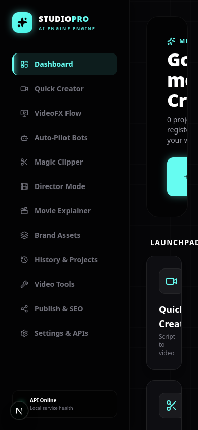

Stand sichern, Aufrufe reparieren
Vor Migrationen sichern wir Daten und Programmstand. Dann werden Schlüssel, Optionen und konkrete fehlerhafte Methodenaufrufe vereinheitlicht.
Vorhandene Abläufe schrittweise verbinden: konsistente Einstellungen, dauerhafte Projekte und nachvollziehbare Aufträge. Weitere Anpassungen und neue Funktionen folgen danach.
Vor Migrationen sichern wir Daten und Programmstand. Dann werden Schlüssel, Optionen und konkrete fehlerhafte Methodenaufrufe vereinheitlicht.
SQLite speichert den gemeinsamen Bestand. Die vorhandenen Pipelines registrieren ihre Ergebnisse, und die Oberfläche zeigt echte Zustände.
Design, vollständiger Editor, Brand-Oberfläche, Agentenstudio und zusätzliche Publisher bekommen anschließend einen eigenen Plan.
Medienwerk soll lokal eine verlässliche Grundlage bekommen, auf der wir anschließend deine weiteren Anpassungen und Funktionen entwickeln können. Ein Auftrag soll nachvollziehbar starten, korrekte Einstellungen verwenden, einen verständlichen Status anzeigen und seine Ergebnisse dauerhaft einem Projekt zuordnen.
Die vorhandene Struktur bleibt der Ausgangspunkt: Next.js und React für die Oberfläche, FastAPI für die API, Python für die Verarbeitung, FFmpeg und Whisper für Medien sowie SQLite für lokale Metadaten. Wir erweitern diese Struktur schrittweise. Das verringert Eingriffe in die großen Dateien des Originalprojekts und erleichtert spätere Upstream-Merges.
Empfohlener erster Hauptablauf: Quick Creator — Thema eingeben → Auftrag verfolgen → Video erzeugen → Ergebnis im Projekt und in der Historie finden → abspielen und herunterladen. Die Kampagnen verwenden dieselbe Pipeline und profitieren anschließend von dieser Verbindung. Die vorhandene lokale Formatkonvertierung dient als einfacher Kontrollfall für Dateispeicherung und Ausgabe ohne KI-Anbieter.
| Bestandteil | Umfang dieses Plans |
|---|---|
| Laufzeit | Lokaler Betrieb für eine Person auf dem vorhandenen Rechner. |
| Produktion | Bestehende Verarbeitung reparieren und schrittweise verbinden. |
| Daten | SQLite für Projekte, Medien und Jobs; Videodateien bleiben im Dateisystem. |
| Oberfläche | Echte Statusmeldungen und Ergebnisse; unvollständige Bereiche eindeutig kennzeichnen. |
| Anbieter | Vorhandene Clients durch gemeinsame Konfiguration und kleine Adapter verbinden. |
| Original-Updates | Kleine Änderungspakete, dokumentierte Eingriffspunkte und separate Merge-Branches. |
Name, Design, vollständige deutsche Oberfläche, neue KI-Anbieter, neue Funktionen, vollwertiger Timeline-Editor, Brand-Upload-Oberfläche, Agentenstudio, neue Social-Publisher und Onlinebetrieb kommen in die nächste Planungsrunde. Die Rückgabe echter Daten an vorhandene Seiten gehört zur Stabilisierung; der Ausbau ihrer Bedienfunktionen gehört zur späteren Anpassung.
Ein Auftrag startet mit geprüften Optionen. Sein Zustand und seine Ausgaben landen im gemeinsamen Bestand. Die vorhandenen Seiten können dadurch dieselben Informationen verwenden.
Der Threadpool und die Videodateien bleiben lokal. SQLite speichert deren Metadaten und die Zustände.
Die Analyse zeigt drei zentrale Verbindungen, die fehlen: gemeinsame Einstellungen, ein gemeinsamer Projektbestand und ein einheitlicher Auftragsvertrag. Darauf bauen die einzelnen Produktionswege auf.
| Ausgangslage aus der Analyse | Gewünschtes Verhalten nach Umsetzung |
|---|---|
| Ergebnisse liegen in unterschiedlichen Ordnern; History und Publish suchen eigene Dateinamen. | Projekte registrieren ihre Ausgaben; vorhandene Seiten lesen denselben Bestand. |
| Gleichnamige Themen und URLs verwenden vorhandene Dateien trotz geänderter Optionen. | Neue Projekte besitzen eindeutige IDs; Wiederverwendung berücksichtigt Quelle und wirksame Einstellungen. |
| Schlüssel, Sprache, Formate und Schalter werden unterschiedlich ausgewertet. | Ein Konfigurationsschema liefert pro Auftrag ein festes, validiertes Einstellungsobjekt. |
| Jobs und Protokolle liegen nur im RAM. | Zustände bleiben in SQLite erhalten; ein Neustart kennzeichnet unterbrochene Verarbeitung. |
| Fortschritt und WebSocket-Nachrichten unterscheiden sich zwischen Seiten. | Alle Seiten verwenden dieselbe Statusstruktur und einen gemeinsamen Client. |
| Einige Funktionen sind Platzhalter oder rufen fehlende Methoden auf. | Bestehende Aufrufe sind repariert; unvollständige Funktionen geben keine falschen Erfolgsanzeigen. |
| Etappe | Aufgabe | Voraussetzung | Ergebnis |
|---|---|---|---|
| P0 | Ausgangsstand und Wiederherstellung sichern | Aktueller lokaler Arbeitsstand | Gesicherte Ausgangsbasis und dokumentierter Start. |
| P1 | Einstellungen und direkte Aufruffehler korrigieren | P0 | Eindeutige Optionen und brauchbare Anbieteradapter. |
| P2 | Projekte, Dateien und bestehende Ergebnisse erfassen | P1 | Gemeinsamer Bestand in SQLite. |
| P3 | Jobs, Fortschritt und Neustarts vereinheitlichen | P2 | Dauerhafte, nachvollziehbare Aufträge. |
| P4 | Bestehende Produktionswege anbinden | P1–P3 | Quick Creator als erster vollständiger Ablauf; weitere Module folgen. |
| P5 | Vorhandene Oberfläche an echte Daten anbinden | P2–P4 | Verlässliche History, Dashboard, Publish-Bibliothek und Statusanzeigen. |
| P6 | Gesamtabnahme und Entwicklungsvoraussetzungen festhalten | P0–P5 | Dokumentierte Grundlage für spätere Anpassungen. |
Jede Etappe wird in kleine Änderungspakete geteilt. Der nächste Schritt baut auf dem dokumentierten Ergebnis des vorherigen auf. Erste verbindliche Aufwandsschätzungen entstehen nach P0/P1; die noch ungeprüften Anbieterwege und Altdateien machen feste Termine derzeit wenig belastbar.
origin/main verlieren.config.json, campaigns.json, SQLite und vorhandenen Produktionsordnern anlegen. Bei laufender SQLite-Datenbank die Backup-Schnittstelle verwenden oder das Backend für die Sicherung anhalten.npm ci und der vorhandene Node-Lock bleiben die Frontend-Basis.Der lokale Startweg ist dokumentiert, sensible Laufzeitdateien sind ausgeschlossen, und vor der ersten Migration existiert eine überprüfbare Sicherung. Es ist nachvollziehbar, welcher Programmstand zu welchem Datenbankschema gehört.
Berührte Bereiche: README.md, LOCAL_TESTING.md, UPSTREAM.md, .gitignore, requirements.txt, ergänzende Lock-/Installationsdokumentation. Kein automatischer Push oder Upstream-Merge ist Bestandteil dieser Etappe.
WAVESPEED_API_KEY als gemeinsamen Namen verwenden. Beim Lesen alter Konfigurationen den Alias WAVESPEED_AI_KEY übernehmen, falls der gemeinsame Wert fehlt. Bei unterschiedlichen ausgefüllten Werten beide lokal erhalten und den Konflikt ohne Ausgabe der Schlüsselwerte melden.FACT_CHECK_ENABLED vereinheitlichen und alte Formularnamen übersetzen. Seitenverhältnisse intern als 16:9, 9:16 oder 1:1 behandeln; alte Anzeigenamen nur am Eingangsrand übersetzen. Bereits im Tool angebotene 1:1-Konvertierung korrekt verarbeiten.text_to_speech() und dessen tatsächliche Parameter anbinden; Stimmen und Modelle für den gewählten Anbieter validieren.job_id-Verweis entfernen. Verarbeitung bleibt dabei kontrolliert; die eigentliche Scheduler-Anbindung folgt in P4.Formular, API und Worker verwenden dieselben Optionsnamen. Alte Einstellungen werden ohne stillen Verlust übernommen. Konfigurationsänderungen während eines Jobs wirken erst für neue Aufträge. Fehlende Voraussetzungen und Schreibfehler erscheinen verständlich; die Tools-TTS-Funktion ruft eine vorhandene Methode mit passenden Parametern auf.
Berührte Bereiche: config.py, neue Konfigurationsschemas, api_clients.py über Adapter, agents.py, server/routers/generation.py, server/routers/tools.py, server/core/scheduler.py, ConfigContext.tsx, vorhandene Formulare.
| Entität | Mindestinhalt |
|---|---|
| Projekt | UUID, Titel, Produktionsart, Erstellungs-/Änderungszeit, aktueller Zustand. |
| Medium | UUID, Projekt-ID, Rolle wie Quelle oder Endvideo, relativer Pfad, Medientyp, technische Eigenschaften, Herkunft. |
| Auftrag | UUID, Projekt-ID, Ablaufart, Zustand, wirksame Einstellungen ohne Geheimnisse, Start/Ende, Ergebnis-IDs, Fehler. |
| Auftragsschritt | Auftrag-ID, stabile Schritt-ID, Zustand, Schrittfortschritt, Zeitpunkte. |
| Ereignis | Auftrag-ID, fortlaufende Sequenz, Zeitpunkt, Nachrichtenart und bereinigter Inhalt. |
Neue Tabellen werden über versionierte Migrationen ergänzt. Die vorhandene OAuth-Tabelle und die bisherige Datenbank werden erhalten. Videodaten kommen nicht in SQLite; dort werden ihre Eigenschaften und Verweise gespeichert.
workspace/projects/<project-id>/ speichern. Darunter Quelle, Zwischenprodukte und Ausgaben getrennt ablegen. Der Titel dient der Anzeige; die UUID verhindert Kollisionen gleichnamiger Themen.Zwei gleichnamige Projekte überschreiben sich nicht. Ein erneuter Import erzeugt keine Duplikate und verschiebt keine Altdateien. Registrierte Endvideos können nach einem Neustart geladen werden. Dateizugriffe und Löschung bleiben innerhalb der festgelegten Bereiche.
Berührte Bereiche: server/core/database.py, neue Migrations-, Projekt-, Medien- und Pfaddienste, History-/Publish-Router, Upload-Router, gezielte Ausgabeordner-Schnittstellen in den Pipelines.
Der vorgeschlagene Zustandsvorrat lautet: queued, running, awaiting_input, cancel_requested, completed, failed, cancelled und interrupted. awaiting_input bildet die Auswahlphase des Clippers ab. interrupted zeigt an, dass die laufende Verarbeitung durch einen Backend-Neustart abgebrochen wurde. Abgeschlossene Zustände dürfen durch verspätete Worker-Meldungen nicht wieder zu „running“ werden.
Alle Ereignisse erhalten einen gemeinsamen Umschlag mit Job-ID, Sequenz, Zeitpunkt, Nachrichtenart und Nutzdaten. Der Browser bekommt beim Verbinden einen vollständigen Zustand. Änderungen und Logs folgen als Ereignisse mit aufsteigender Sequenz. Ein gemeinsamer Frontend-Client verarbeitet Ergebnisse, Fehler und Abbruch auch dann, wenn der Job schon vor dem Verbinden fertig war.
completed gelten erst nach Prüfung und Registrierung der Endausgabe.interrupted setzen. Gespeicherte Auswahlzustände bleiben abrufbar. Wartende Produktionsaufträge werden zunächst ebenfalls nicht automatisch neu ausgeführt; ein gezielter neuer Versuch ist erforderlich.Ein früher Abschluss, ein Fehler und ein Verbindungsabbruch werden auf allen angebundenen Seiten korrekt angezeigt. Nach einem Backend-Neustart bleiben Projekt und letzter Status sichtbar. Ein Abbruch wird erst nach tatsächlichem Ende bestätigt. Ein Neustart oder Doppelklick verursacht keinen automatischen zusätzlichen Anbieterauftrag.
Berührte Bereiche: server/core/queue.py, neue Job-Schemas und Repository-Methoden, Worker-Adapter, WebSocket-Endpunkte, web/src/lib/ und Statusbehandlung auf Produktionsseiten.
| Reihenfolge | Ablauf | Arbeitspaket |
|---|---|---|
| 1 | Quick Creator | Projektkontext, feste Einstellungen, neue Jobs, Gesamtfortschritt und Registrierung der Enddatei. |
| 2 | Video Tools | Konvertierung und Untertitel als nachvollziehbare Aufträge; Ergebnisse im gemeinsamen Bestand. TTS über den reparierten Adapter. |
| 3 | Magic Clipper | Analyse → gespeicherte Auswahl → Rendern; Zeiten und Clipdauer validieren; Sprache aus wirksamen Optionen übernehmen. |
| 4 | Director und Explainer | Ausgabe registrieren, Optionen konsequent anwenden, Wiederverwendung und Abbruch angleichen. |
| 5 | VideoFX | Als bestehende Browserautomatisierung kennzeichnen, Job/Ergebnis registrieren und Startstatus von bestätigter Anmeldung trennen. |
| 6 | Kampagnen | Produktion über den stabilisierten Quick-Creator-Dienst; Kampagne, Projekt und Job verknüpfen. |
Der Quick Creator durchläuft Eingabe, Job, Datei, Projektregistrierung, History und Download mit denselben IDs. Auch Tools und angeschlossene weitere Abläufe registrieren ihre tatsächlichen Endausgaben. Ein geändertes Sprach-/Stimmenprofil verwendet nicht still eine alte Ausgabe. Eine Kampagne startet höchstens einen Auftrag pro Fälligkeit.
Die Integration eines externen Wegs gilt erst nach einer ausdrücklich dokumentierten Anbieterprüfung als praktisch bestätigt. Der Plan verlangt keine sofortige kostenpflichtige Produktion: technische Vertragsprüfungen können mit kontrollierten Testantworten erfolgen; reale Anbieterläufe werden später gezielt abgegrenzt.
Berührte Bereiche: Pipeline-Router, pipeline.py, pipeline_shorts.py, Director-/Explainer-Engine, VideoFX-Router, Scheduler und neue Ablaufadapter. Große Dateien werden nur an notwendigen Übergabestellen angepasst.

Dashboard, History und Publish zeigen denselben Projektbestand mit nachvollziehbaren Filtern. Leere Bestände zeigen echte Leerzustände. Eine nicht implementierte Funktion behauptet weder eine erfolgreiche Verbindung noch eine erledigte Verarbeitung.
Berührte Bereiche: Dashboard, Sidebar, History, Publish, vorhandene Produktionsseiten, gemeinsame Status-/Ergebnis-Komponenten. Das vorhandene Design bleibt die Grundlage.
Die folgenden Prüfungen sind Abschlusskriterien für die spätere Umsetzung. Bei der Erstellung dieses Plans werden keine Anwendungstests hinzugefügt oder ausgeführt.
| Prüfbereich | Geplantes Szenario | Erwartung |
|---|---|---|
| Konfiguration | Alte Schlüssel, unterschiedliche Aliaswerte, fehlerhafte Optionen, fehlender Schlüssel. | Keine stillen Verluste; verständliche Fehler; feste Einstellungen pro Job. |
| Projekte | Zwei gleiche Titel, wiederholter Altimport, Datei fehlt, Projekt löschen. | Keine Überschreibung; keine Duplikate; keine fremde Datei gelöscht. |
| Jobs | Früher Abschluss, WebSocket-Neuverbindung, Doppelklick, Fehler. | Browser zeigt dauerhaften richtigen Zustand und nachvollziehbare Ergebnisse. |
| Neustart | Backend während eines Laufs neu starten. | Job als unterbrochen sichtbar; kein automatischer neuer Anbieterauftrag. |
| Abbruch | Wartenden Auftrag und lokalen FFmpeg-Lauf abbrechen; externen Aufruf simulieren. | Zustände entsprechen dem tatsächlichen Verarbeitungsschritt. |
| Lokales Medium | Eigenes kurzes Video nach 9:16 und angebotenem 1:1 konvertieren. | Korrekte Maße; registriertes Projekt; Wiedergabe und Download. |
| Quick Creator | Kontrollierte Anbieterantworten und später ein kleiner realer Lauf. | Eingabe → Endvideo → History → Download vollständig verbunden; reale Prüfung separat dokumentiert. |
| Weitere Abläufe | Clipper-Auswahl, Explainer mit geänderten Optionen, Director-Enddatei. | Zeiten gültig; Wiederverwendung korrekt; Ergebnis im gemeinsamen Bestand. |
| Kampagne | Eine Fälligkeit doppelt prüfen und alte aktive Kampagne importieren. | Ein Job je Fälligkeit; Alt-Kampagne nicht unbemerkt aktiv. |
| Oberfläche | Leerer Bestand, nicht erreichbares Backend, nicht implementierte Social-Funktion. | Verständliche Zustände und echte Daten. |
| Migration | Sicherung herstellen, Migration ausführen, dokumentierten Rückweg anwenden. | Daten und Programmstand passen zusammen; neue Daten werden beim Rückweg berücksichtigt. |
| Installation | Sauberer lokaler Installationsstand, Frontend-Build und Start. | Dokumentation und gebundene Abhängigkeiten reichen zum lokalen Start. |
Ein automatischer Prüfbestand wird erst im Umsetzungsschritt eingerichtet, wenn wir die Prüfung der Änderungen beauftragen. Er sollte lokal arbeiten und standardmäßig keine externen Anbieter oder Veröffentlichungen aufrufen.
Die Übergabe enthält eine aktualisierte Architekturbeschreibung, Schemaversionen, bekannte Restgrenzen, die tatsächlich ausgeführten Prüfungen und eine kurze Anleitung für neue Module. Verbindliche Aussage ist jeweils, was geprüft wurde: ein erfolgreicher Build ersetzt keinen realen Anbieter- oder Medienlauf.
| Befund | Bearbeitung | Umfang |
|---|---|---|
| F01 — Ergebnisse fehlen in History | P2, P4, P5 | Gemeinsame Registrierung und Bestand. |
| F02 — WaveSpeed-Schlüsselnamen | P1 | Eindeutiger Name mit Altkompatibilität. |
| F03 — Kampagnenfehler | P1, P4 | Aufruf korrigieren und Scheduler mit Jobs verbinden. |
| F04 — Tools-TTS fehlt Methode | P1, P4 | Adapter und Registrierung; echte Anbieterprüfung separat. |
| F05 — Beispielzahlen/Status | P5 | Echte Daten oder eindeutiger Leerzustand. |
| F06 — Timeline wirkungslos | P5, später | Jetzt kennzeichnen; vollständiger Editor später. |
| F07 — Social-Simulation | P5, später | Jetzt keine falschen Verbindungen; neue Publisher später. |
| F08 — Veraltete Wiederverwendung | P2, P4 | Projekt-IDs und Fingerprints. |
| F09 — Fortschritt/Abbruch | P3, P4 | Gemeinsame Zustände und Worker-Verträge. |
| F10 — Sprache/Format | P1, P4 | Vorhandene Optionen konsistent anwenden; Erweiterungen später. |
| F11 — Brand-Platzhalter | P5, später | Jetzt kennzeichnen; Bedienoberfläche später. |
| F12 — Agentenstudio unverbunden | P5, später | Jetzt kennzeichnen; vollständiger Ablauf später. |
| F13 — Wirkungsloser Schalter | P1, P5 | Bestehende Wirkung prüfen; nicht implementierte Option deaktivieren. |
| F14 — Jobs im RAM | P2, P3 | Dauerhafte Zustände; gezielter Neustart eines Versuchs. |
| F15 — Öffentlicher Betrieb ungeschützt | P1, P2, später | Jetzt Secret-Ausgaben und Dateigrenzen korrigieren; Anmeldung und Mehrbenutzer-/Onlinebetrieb später. |
Die Stabilisierung ist keine vollständige Umsetzung aller ursprünglich beworbenen Funktionen. Die Tabelle macht sichtbar, welche Befunde repariert werden und welche Bereiche ausdrücklich als spätere Entwicklung bestehen bleiben.
Für jedes Paket ist eine kleine Serie nachvollziehbarer Commits vorgesehen: Konfiguration, Datenmodell, Jobmodell, einzelne Ablaufadapter und einzelne UI-Verbindungen. Neue Services und Schemas erhalten eigene Dateien. pipeline.py und api_clients.py bekommen gezielte Übergabestellen statt einer vollständigen Umschreibung.
Neue Original-Updates werden nach UPSTREAM.md in einem eigenen Update-Branch geprüft und zusammengeführt. Vor dem Merge muss der lokale Arbeitsstand bewusst gesichert sein. Anpassungen am Programm werden gemeinsam mit Datenbankschema und vorhandenen API-Verträgen betrachtet. Kleine Adapter können Konflikte reduzieren; konfliktfreie Updates werden dadurch nicht garantiert.
Diese Runde gilt als abgeschlossen, wenn der lokale Start reproduzierbar ist, Einstellungen konsistent wirken, Projekte und Jobs dauerhaft gespeichert werden, der Quick Creator durchgängig verbunden ist, die in P4 aufgeführten Produktionswege den gemeinsamen Vertrag verwenden, registrierte Ergebnisse auf den vorhandenen Seiten erscheinen und unvollständige Funktionen eindeutig erkennbar sind. Nicht real geprüfte Anbieterwege bleiben ausdrücklich als solche gekennzeichnet.
Danach planen wir deine individuellen Anpassungen auf dieser dokumentierten Grundlage. Der empfohlene erste Umsetzungsschritt ist P0, anschließend P1. Neue Funktionen werden nicht vorgezogen, um die Abschlusskriterien dieser Runde zu ersetzen.
Die Aufgaben werden gemäß deiner Vorgabe an Subagents mit gpt-6-luna und Reasoning high vergeben. Der Hauptagent definiert gemeinsame Verträge, koordiniert die Übergaben und übernimmt die abschließende Prüfung selbst.
Maximal drei Worker können gleichzeitig neben dem Hauptagent arbeiten. Abhängige Etappen bleiben in der vorgesehenen Reihenfolge; gemeinsame Dateien und Datenbankmigrationen haben jeweils einen schreibenden Agenten. Größere unabhängige Pakete erhalten isolierte Worktrees auf Grundlage des in P0 gesicherten angepassten Stands.
Die Rollen für P0–P6, Übergabekriterien, vorhandenen Skills und geprüften GitHub-Ergänzungen stehen in AGENT_WORKFLOW.md. Der lokale Skill-Dateibestand steht in SKILLS_INVENTORY.csv. Externe Kandidaten wurden recherchiert, noch nicht installiert.